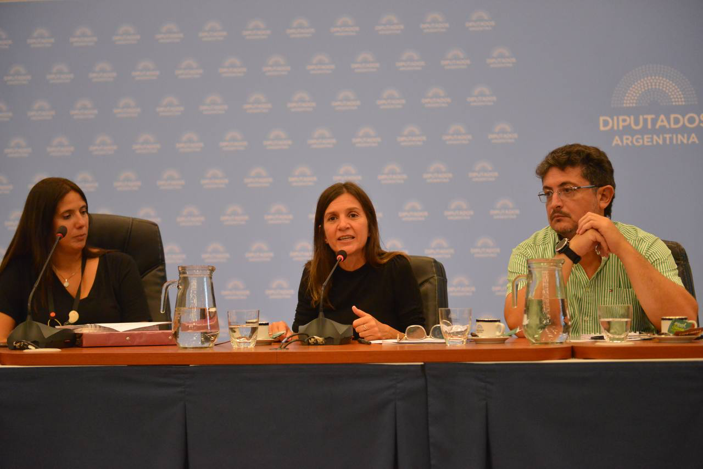

Martes 7 de Febrero de 2023
Fernanda Raverta, Wado De Pedro y Mariel Fernández inauguraron una oficina de ANSES en Moreno

Martes 7 de Febrero de 2023

Martes 1 de Febrero de 2023
Raverta: "Es urgente que las y los diputados traten la ley de pago de deuda previsional"
Martes 31 de Enero de 2023
Fernanda Raverta: “Es antidemocrático cerrar el Congreso e impedir que los argentinos se jubilen"